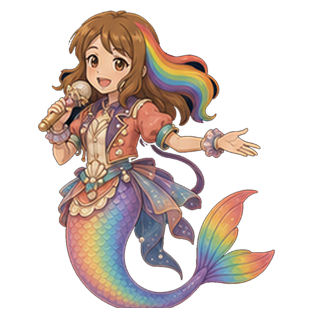
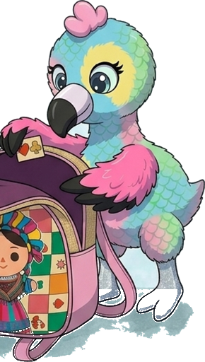
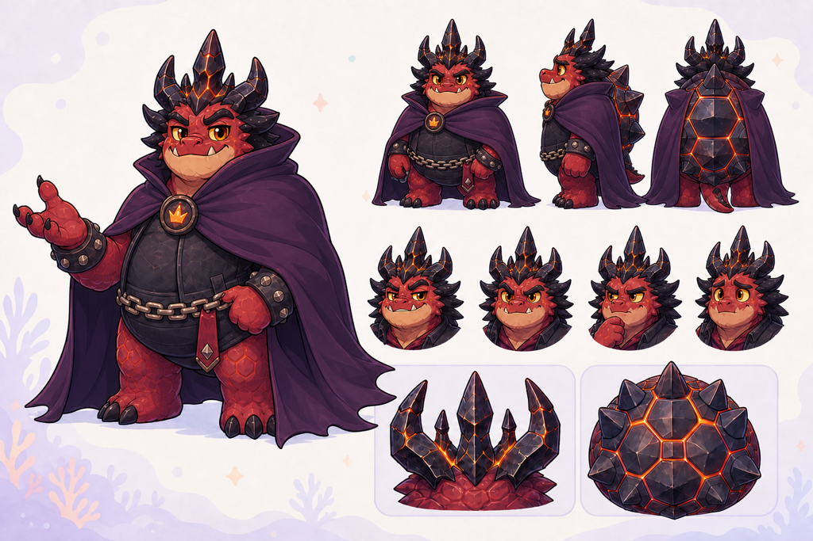
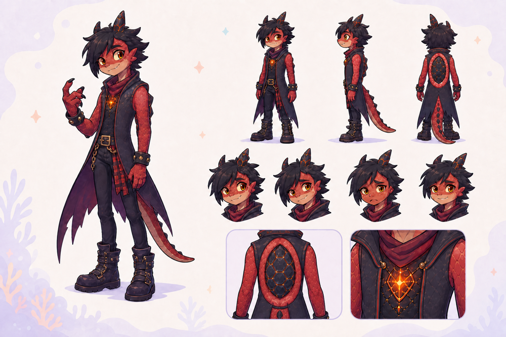

BAND-01 · The birthday becomes a bandstand


Roshan raises both sticks above her kit on the birthday lawn
End: the friends are ready and the single lit candle remains on the cake
song introductionBAND-02 · Roshan finds the groove
Roshan alternates two clear stick contacts on the two toms
End: both sticks rebound naturally above the drumheads
first percussion entranceBAND-03 · Daddy on ukulele

Daddy Mermaid strums his four-string ukulele beside Roshan on drums
End: Daddy smiles toward Roshan with his ukulele still held naturally
first light string phraseBAND-04 · Baby Eagle on bass

Baby Eagle plucks a four-string bass with one wing while the other steadies the neck
End: Baby Eagle holds the bass securely, with no human hands or extra wings
first bass phraseBAND-05 · The King demands a turn

the King strums his electric lead guitar during one theatrical musical outburst
End: the King settles with his guitar and the candle still on the cake
first King grindcore onset — locate in recordingBAND-06 · A delighted drum reply
Roshan answers with a short tom fill ending on one cymbal contact
End: the cymbal gently settles and Roshan smiles
Roshan return after first outburstBAND-07 · The Prince joins in

the Prince plays a short fill around his absurdly elaborate metal drum kit with exactly two sticks then glances toward Roshan with a shy smile
End: the Prince faces Roshan without threatening her
Prince grindcore onset — speaker attribution pending recordingBAND-08 · The groove belongs to everyone
Roshan keeps time while Daddy strums once in response
End: Roshan and Daddy face the same audience
next recorded chorus or repeated phraseBAND-09 · The King's last blast
the King delivers one final overblown lead-guitar flourish while eyeing the candle
End: the King settles his strapped guitar and looks at the candle
last King grindcore interruption — locate in recordingBAND-10 · Roshan finishes successfully
Roshan lands her final drum hit and raises the sticks in happy relief
End: Roshan has visibly finished and the candle is still hers
last Roshan cadenceBAND-11 · Cheating after the contest
the King lifts the single lit rainbow candle from the cake using his royal magic
End: the candle is in the King's hand and the intact cake has an empty candle place
post-cadence story beat; not a missed player noteBAND-12 · The Prince objects
the Prince reaches one open hand toward his father then lets it fall in disappointment
End: the Prince remains beside his father, visibly unhappy with the cheating
quiet reaction after theftBAND-13 · Together after the music
Daddy moves beside Roshan with his ukulele as Roshan lowers her sticks
End: Roshan has support; Baby Eagle stays with her and King and Prince have left together with the candle
closing tail or separate story coda